go back
Cake
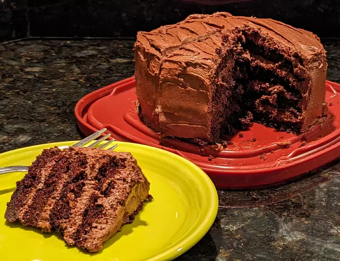
Description
There's nothing like a good ol' back-of-the-box recipe. This recipe for
Hershey's chocolate cake can be found on the baking aisle of any grocery
store (specifically, on the label of the brand's signature unsweetened
cocoa powder).
The iconic chocolate cake recipe was shared on Allrecipes more than 20
years ago, and has since earned almost 3,000 rave reviews and ratings.
It's not hard to see why it's beloved by the Allrecipes community:
Hershey's chocolate cake is incredibly indulgent, yet incredibly easy to
make with basic ingredients. Try it today to see what all the fuss is
about!
Ingredients:
- 2 Cups white sugar.
- 1 3/4 cups all-purpose flour
- 3/4 cup unsweetened cocoa powder
- 1 1/2 teaspoons baking soda
- 1 1/2 teaspoons baking powder
- 1 teaspoon salt
- 2 large eggs
- 1 Cup milk
- 1/2 cup vegatable oil
- 2 teaspoons vanila extract
- 1 cup boiling water
Steps:
-
Preheat the oven to 350 degrees F (175 degrees C). Grease and flour two
9-inch round cake pans.
-
Make cake: Stir together sugar, flour, cocoa, baking soda, baking
powder, and salt in a bowl.
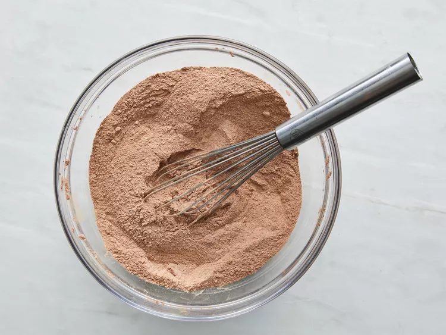
-
Add eggs, milk, oil, and vanilla; mix for 3 minutes with an electric
mixer. Stir in boiling water by hand.
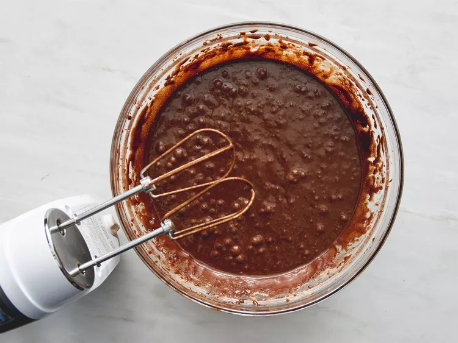
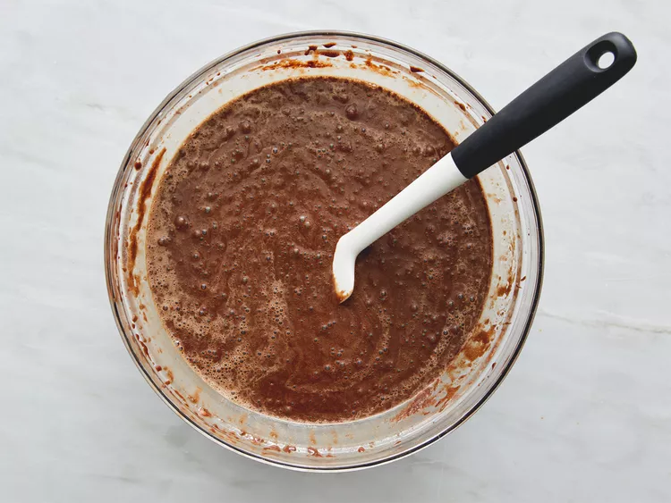
- Pour evenly into the prepared pans.
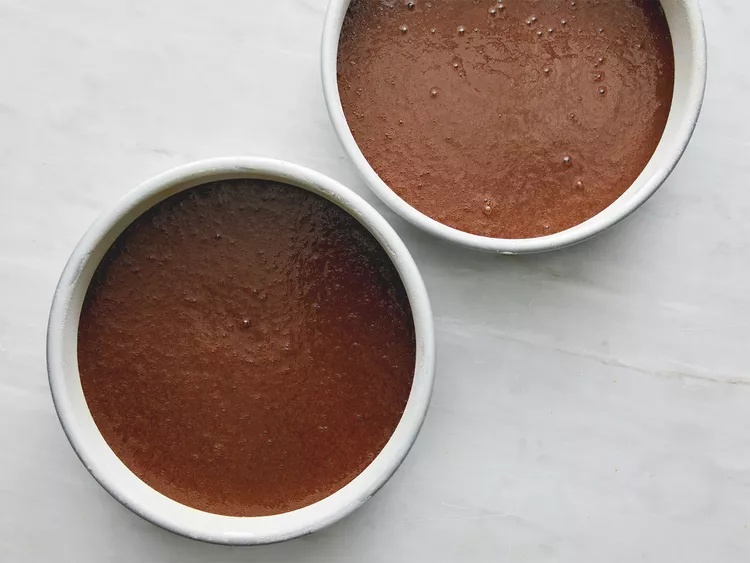
-
Bake in the preheated oven until a toothpick inserted into the centers
comes out clean, 30 to 35 minutes. Cool for 10 minutes before removing
from pans to cool completely.
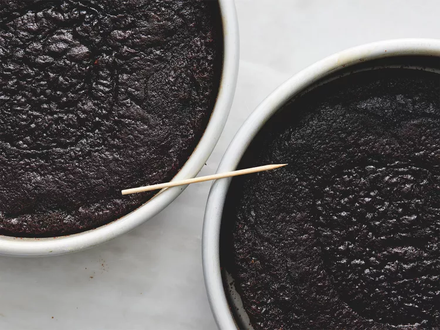
-
While cakes cool, make frosting: Cream butter with an electric mixer
until light and fluffy. Stir in confectioners' sugar and cocoa
alternately with milk and vanilla. Beat to a smooth spreading
consistency.
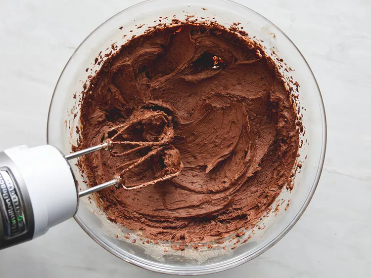
-
Split the layers of the cooled cake horizontally, cover the top of each
layer with frosting, then stack them onto a serving plate.
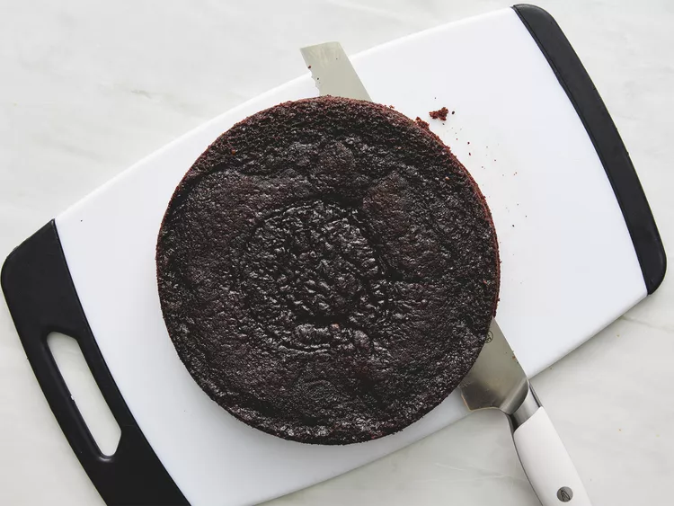
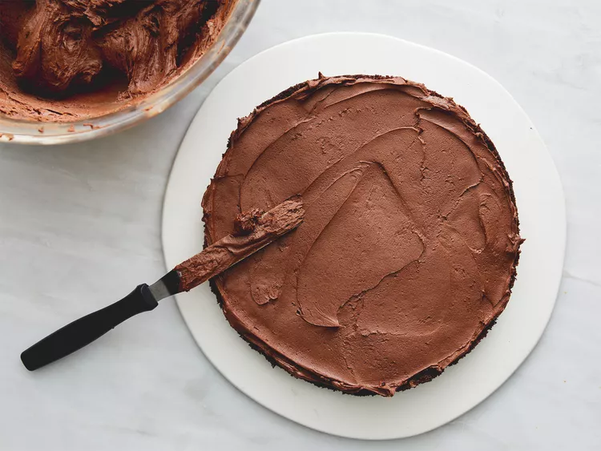
- Frost the outside of the cake with remaining frosting.
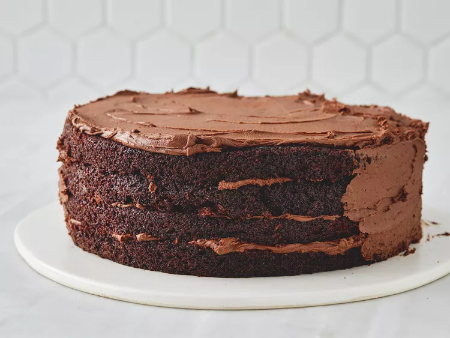
- Enjoy!
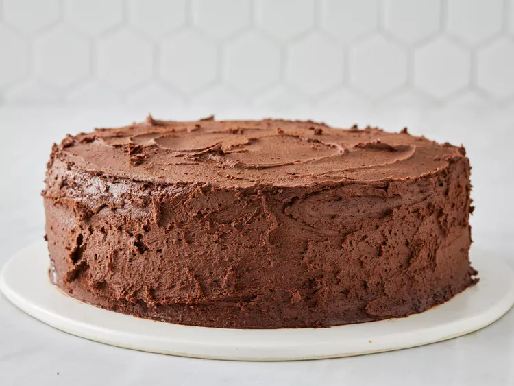